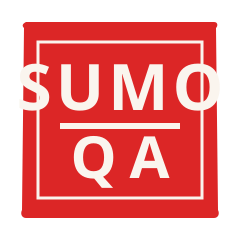
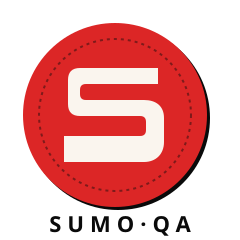

Solid red stamp with a hard inner border — references both the traditional Japanese personal seal and a QA approval stamp at the same time. Bold stacked wordmark with a mawashi bar between SUMO and QA.
best for · github avatar · social card · favicon
Ultra-condensed black "SUMO" with red "QA" deliberately crashing into the trailing O. Mawashi bar underneath with a hard knot. Tiny mono baseline tick (version + license) — engineering-ledger feel. Editorial, strong, screenshots clean.
best for · readme banner · slides · sticker run

Off-centred red dohyo (sumo ring) with a hard black depth shadow. Brutalist squared "S" carved into the centre — geometric construction, not handwriting. Compact SUMO·QA wordmark underneath. Confident from across the room.
best for · application icon · cover art · merch